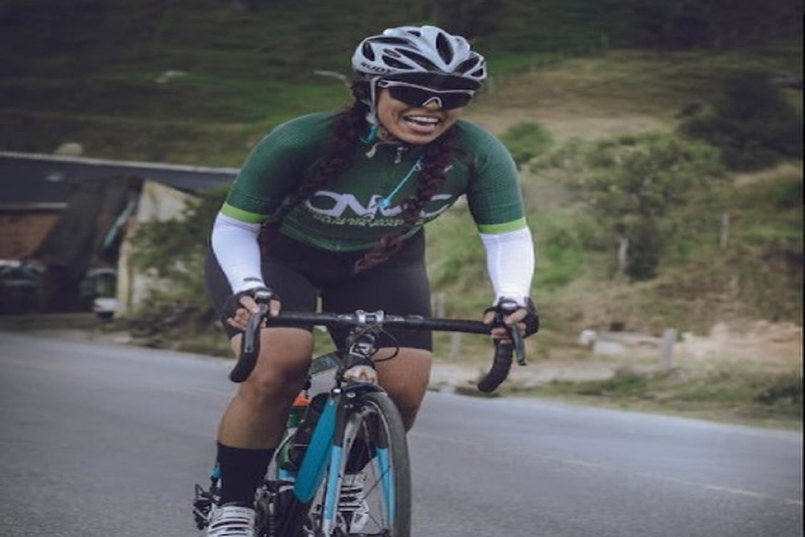

Atletismo
Dicho de una persona: Andar rápidamente y con tanto impulso que, entre un paso y el siguiente, quedan por un momento ambos pies en el aire. Correr es la manera más rápida de desplazamiento a pie de un animal o de una persona. A la acción y efecto se denomina carrera. Esta actividad es una forma de ejercicio aeróbico tanto como anaeróbico.

Natación
La natación es el movimiento y el desplazamiento a través del agua mediante el uso de las extremidades corporales y por lo general sin utilizar ningún instrumento o apoyo para avanzar. La natación es consistentemente una de las actividades recreativas públicas y en algunos países las lecciones de natación son una parte obligatoria del currículo educativo.
